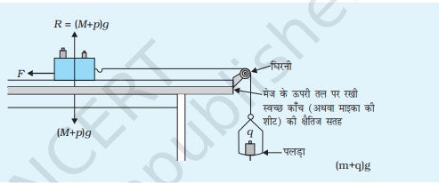

Limiting Friction
चरम घर्षण बल
घर्षण
जब दो सतहें आपस में संपर्क में आती हैं और एक-दूसरे के सापेक्ष गति करना चाहती हैं, तो उनके बीच एक बल कार्य करता है जो इस परस्पर गति का विरोध करता है। इस बल को घर्षण बल कहा जाता है। यह बल सूक्ष्म स्तर पर सतहों के बीच मौजूद असमानताओं और आणविक आकर्षण के कारण उत्पन्न होता है।
स्थैतिक घर्षण
यदि कोई वस्तु किसी सतह पर स्थिर (बलों की साम्यावस्था ) अवस्था में है, अब उस पर कोई बाहरी बल लगाया जाता है, जिससे वह सतह पर गति करना चाहे, तो स्थैतिक घर्षण बल उस वस्तु की गति का विरोध करता है।
- स्थैतिक घर्षण केवल तब तक कार्य करता है जब तक कि वस्तु वास्तव में गति में नहीं आती।
- यह दो स्थिर सतहों के बीच कार्य करता है और वस्तु को स्थिर बनाए रखता है।
- यदि लगाए गए बल की मात्रा स्थैतिक घर्षण बल से अधिक हो जाती है, तो वस्तु गति करने लगती है
चरम घर्षण
यह स्थैतिक घर्षण का अधिकतम मान होता है। जब कोई वस्तु अन्य वास्तु के सापेक्ष गति आरम्भ करने की सबसे प्रारंभिक अवस्था में हो तब उनके बीच में चरम घर्षण होता हैं।
- यह वह घर्षण बल होता है इससे अधिक बल लगाने पर वस्तु गति करने लगती है।
- जब कोई वस्तु किसी अन्य सतह पर गति शुरू करने की कगार पर होती है, तो उस समय उस पर लगने वाला अधिकतम घर्षण बल चरम घर्षण बल कहलाता है।
- यह बल उस बिंदु को दर्शाता है जहां स्थैतिक घर्षण समाप्त होकर गतिज घर्षण में बदल जाता है।
गतिज घर्षण
जब कोई वस्तु एक सतह पर गति करने लगती है, तो उस पर एक अलग प्रकार का घर्षण बल कार्य करता है जिसे गतिज घर्षण बल कहते हैं।
- यह बल वस्तु की गति के दौरान लगातार कार्य करता है और उसे धीमा करने का प्रयास करता है।
- गतिज घर्षण आमतौर पर स्थैतिक घर्षण से कम होता है।
- यह घर्षण बल वस्तु की गति को नियंत्रित करने और उसे रोकने में मदद करता है।
Licensed under the Creative Commons Attribution Share Alike License 4.0